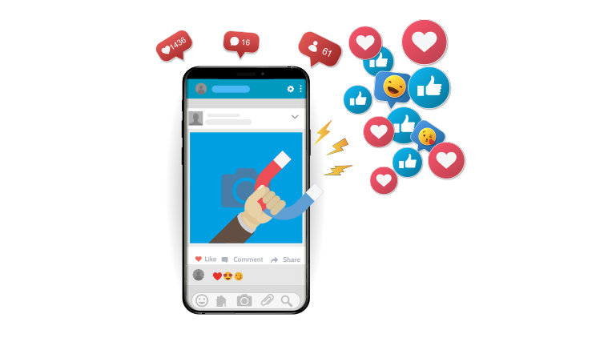

En la actualidad, el uso constante del celular y redes sociales influye directamente en los procesos cognitivos. Aplicaciones digitales generan interrupciones frecuentes que reducen la atención sostenida.
Según la American Psychological Association, la multitarea digital disminuye el rendimiento académico y afecta la memoria de trabajo (APA, 2023).
Concentración: La exposición constante a notificaciones reduce la capacidad de atención profunda.
Memoria: La falta de enfoque impide la correcta consolidación en el hipocampo.
Toma de decisiones: El uso excesivo de redes estimula el sistema dopaminérgico, incrementando conductas impulsivas.
Estudios de la Universidad de Stanford demuestran que la multitarea digital deteriora la capacidad de filtrado de información irrelevante.


La cultura digital actual promueve la hiperconectividad. La validación social mediante “likes” influye en la autoestima y en la percepción de la realidad.
La hipótesis del mundo carpinteado sostiene que el entorno moldea la percepción y el pensamiento, adaptando el cerebro a los estímulos predominantes.
La Organización Mundial de la Salud (OMS) advierte que el uso excesivo de pantallas está relacionado con trastornos de ansiedad y alteraciones del sueño (OMS, 2022).
Estrategias recomendadas:
- Establecer horarios sin celular.
- Practicar pausas activas.
- Dormir 7–9 horas sin dispositivos electrónicos.
- Fortalecer relaciones interpersonales presenciales.
El equilibrio digital es fundamental para proteger la salud mental y optimizar los procesos cognitivos.
American Psychological Association (2023). Impact of multitasking on cognition.
Organización Mundial de la Salud (2022). Salud mental en la era digital.